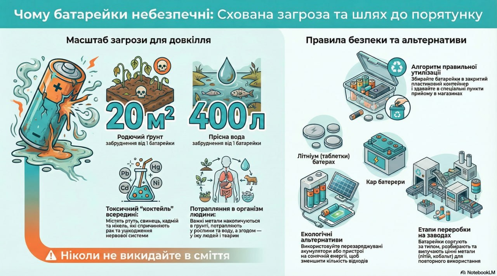

📖 Комікс-діалог
Натисни на персонажів або хмаринки 👇



Чому батарейки небезпечні
Батарейки та акумулятори — це невеликі пристрої, які містять величезну небезпеку для навколишнього середовища та здоров'я людей. Вони містять важкі метали (кадмій, ртуть, свинець, нікель, цинк) та електроліти, які є токсичними речовинами.
Коли батарейки потрапляють на звичайне сміттєзвалище або в природу, їх оболонка поступово руйнується під впливом вологи та часу. Це призводить до витоку токсичних речовин, які отруюють ґрунт, воду та повітря. Одна маленька батарейка може забруднити до 20 квадратних метрів ґрунту або 400 літрів води!
За статистикою, в Україні щороку використовується мільйони батарейок, але лише невелика частина з них правильно утилізується. Більшість батарейок потрапляє на звалища, де вони продовжують шкодити навколишньому середовищу протягом багатьох років.
Крім того, деякі типи батарейок (особливо літієві) можуть спричиняти пожежі при пошкодженні або короткому замиканні. Це робить їх небезпечними не тільки для навколишнього середовища, але й для людей, які з ними працюють.
Типи батарейок та їх небезпека
Існує кілька типів батарейок, кожен з яких має свої особливості та небезпеки:
- Алкалінні батарейки (AA, AAA): Найпоширеніший тип. Містять цинк та марганець, які можуть забруднювати навколишнє середовище. Хоча вони менш токсичні, ніж деякі інші типи, їх все одно потрібно правильно утилізувати.
- Літієві батарейки: Використовуються в годинниках, фотоапаратах, іграшках. Містять літій, який може спричиняти пожежі при пошкодженні. Дуже небезпечні для навколишнього середовища.
- Нікель-кадмієві (Ni-Cd): Використовуються в старих пристроях. Містять кадмій — дуже токсичний важкий метал, який може викликати серйозні проблеми зі здоров'ям.
- Нікель-метал-гідридні (Ni-MH): Більш екологічна альтернатива Ni-Cd батарейкам, але все одно потребують правильної утилізації.
- Свинцево-кислотні акумулятори: Використовуються в автомобілях. Містять свинець та сірчану кислоту — дуже небезпечні речовини.
- Ртутні батарейки: Зараз рідко використовуються, але все ще можуть зустрічатися в старих пристроях. Містять ртуть — один з найтоксичніших металів.
Екологічні наслідки неправильної утилізації
Неправильна утилізація батарейок має серйозні наслідки:
- Отруєння ґрунту: Токсичні речовини з батарейок потрапляють у ґрунт, роблячи його непридатним для вирощування рослин. Важкі метали накопичуються в ґрунті та можуть потрапляти в рослини, які потім їдять люди та тварини.
- Забруднення води: Токсичні речовини з батарейок можуть потрапляти в ґрунтові води та водойми, отруюючи водні організми та роблячи воду непридатною для використання. Одна батарейка може забруднити до 400 літрів води!
- Забруднення повітря: При спалюванні батарейок на звалищах або в сміттєспалювальних заводах токсичні речовини потрапляють у повітря, створюючи небезпеку для здоров'я людей.
- Вплив на здоров'я: Важкі метали з батарейок можуть потрапляти в організм людини через забруднену воду, їжу або повітря, викликаючи серйозні проблеми зі здоров'ям, включаючи рак, ушкодження нервової системи та інші захворювання.
- Вплив на тварин: Тварини можуть проковтнути батарейки або отруїтися токсичними речовинами з них, що призводить до хвороб та смерті.
- Пожежна небезпека: Деякі типи батарейок (особливо літієві) можуть спричиняти пожежі при пошкодженні, короткому замиканні або перегріві.
- Втрата цінних ресурсів: Батарейки містять цінні метали (нікель, кобальт, літій), які можна витягти та використати повторно. Неправильна утилізація означає втрату цих ресурсів.
Як правильно утилізувати батарейки
Правильна утилізація батарейок критично важлива для захисту навколишнього середовища:
- Ніколи не викидайте батарейки в звичайне сміття: Батарейки повинні збиратися окремо та здаватися в спеціальні пункти прийому.
- Зберігання: Зберігайте використані батарейки в окремому контейнері (наприклад, пластиковій коробці) до моменту здачі. Переконайтеся, що контейнер сухий та закритий.
- Пункти прийому: У багатьох містах України є спеціальні пункти прийому батарейок. Вони часто розташовані в супермаркетах, магазинах електроніки або спеціальних еко-центрах. Знайдіть найближчий пункт у вашому місті.
- Шкільні програми: Багато шкіл організовують збір батарейок. Дізнайтеся, чи є така програма у вашій школі, або організуйте її самостійно.
- Не зберігайте батарейки довго: Не зберігайте використані батарейки вдома довше, ніж потрібно. Як тільки у вас накопичиться кілька батарейок, віднесіть їх до пункту прийому.
- Не пошкоджуйте батарейки: Не намагайтеся розбирати, пробивати або спалювати батарейки. Це може бути небезпечно та призвести до витоку токсичних речовин.
Рішення та альтернативи
Крім правильної утилізації, є кілька способів зменшити негативний вплив батарейок:
- Використання перезаряджуваних акумуляторів: Перезаряджувані акумулятори можна використовувати багато разів, що значно зменшує кількість відходів. Хоча вони коштують дорожче, вони економлять гроші в довгостроковій перспективі та значно менше шкодять навколишньому середовищу.
- Використання пристроїв на сонячній енергії: Деякі пристрої (як калькулятори, годинники) можуть працювати на сонячній енергії, що повністю усуває потребу в батарейках.
- Використання пристроїв з підключенням до мережі: Де можливо, використовуйте пристрої, які працюють від електричної мережі замість батарейок.
- Економне використання: Вимикайте пристрої, коли вони не використовуються, щоб батарейки служили довше. Виймайте батарейки з пристроїв, які довго не використовуються.
- Освіта та інформація: Поширюйте інформацію про важливість правильної утилізації батарейок серед друзів, родини та однокласників. Організуйте в школі кампанію зі збору батарейок.
- Підтримка програм переробки: Підтримуйте організації та програми, які займаються переробкою батарейок та екологічним просвітництвом.
Процес переробки батарейок
Правильна переробка батарейок дозволяє витягти цінні матеріали та утилізувати токсичні речовини безпечним способом:
- Сортування: Батарейки сортуються за типом (алкалінні, літієві, нікель-кадмієві тощо), оскільки кожен тип потребує різного процесу переробки.
- Розбирання: Батарейки розбираються, щоб витягти різні компоненти.
- Витягнення металів: Цінні метали (нікель, кобальт, літій, цинк) витягуються та очищаються для повторного використання.
- Утилізація токсичних речовин: Токсичні речовини (кадмій, ртуть, свинець) утилізуються безпечним способом, щоб вони не потрапили в навколишнє середовище.
- Переробка пластмас: Пластмасові частини батарейок також можуть бути перероблені.
Процес переробки складний та вимагає спеціального обладнання, тому батарейки повинні здаватися в спеціалізовані пункти прийому, а не викидатися в звичайне сміття.
Важливість правильної утилізації
Правильна утилізація батарейок критично важлива для захисту навколишнього середовища та здоров'я людей:
- Захист навколишнього середовища: Правильна утилізація запобігає забрудненню ґрунту, води та повітря токсичними речовинами.
- Збереження ресурсів: Переробка батарейок дозволяє витягти цінні метали та використати їх повторно, зменшуючи потребу в видобутку нових ресурсів.
- Захист здоров'я: Правильна утилізація запобігає потраплянню токсичних речовин в організм людини через забруднену воду, їжу або повітря.
- Зменшення небезпеки пожеж: Правильна утилізація запобігає пожежам, які можуть виникнути при пошкодженні батарейок.
- Економічна вигода: Переробка батарейок створює робочі місця та сприяє розвитку економіки.
Пам'ятайте: одна маленька батарейка може забруднити велику територію! Завжди здавайте батарейки в спеціальні пункти прийому, ніколи не викидайте їх у звичайне сміття!